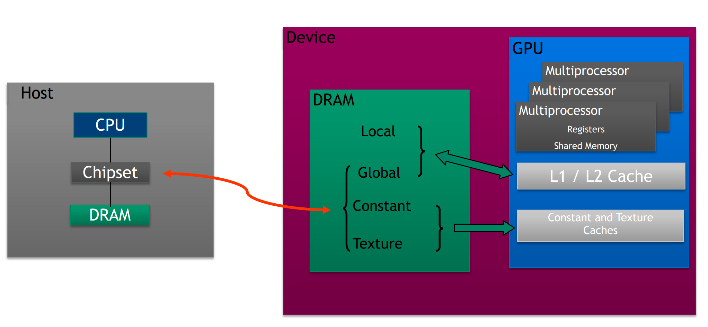
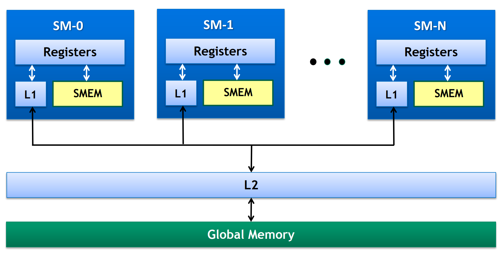
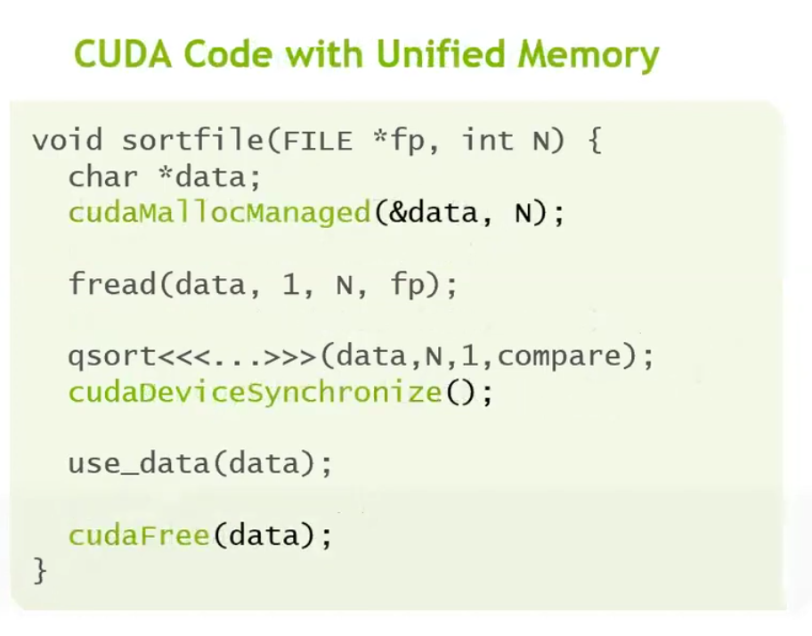
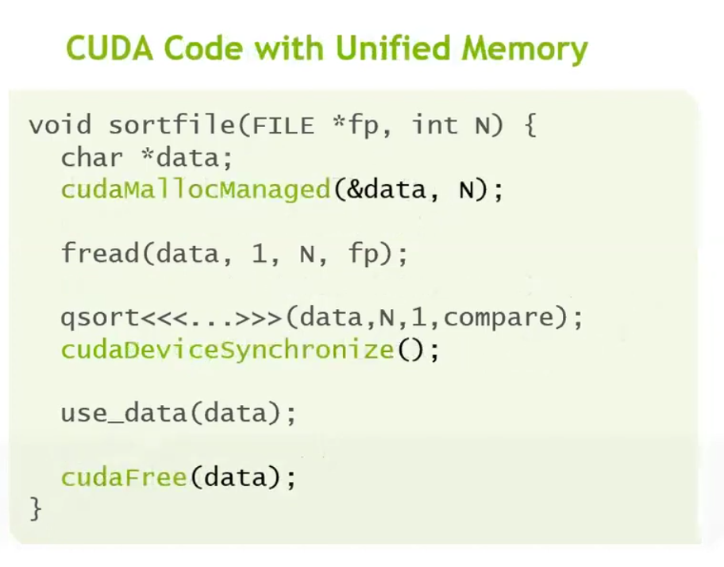
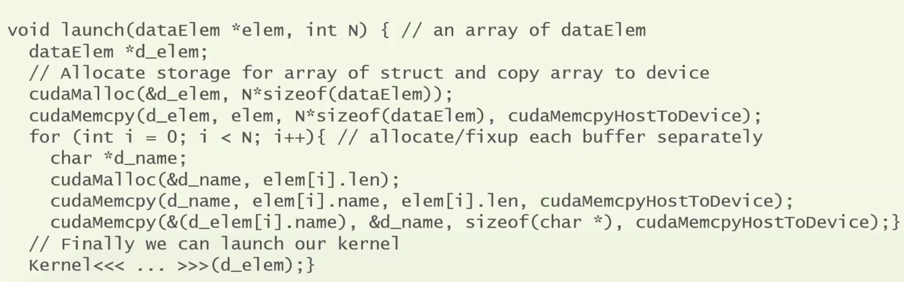

CUDA Memory
GPU/CPU Memory
CPU Memory vs GPU Memory



Host and device memory transfer
cudaMemcpy(d_y, y, N*sizeof(float), cudaMemcpyHostToDevice);
cudaMemcpy(y, d_y, N*sizeof(float), cudaMemcpyDeviceToHost);
-
data transfer between CPU and GPU
-
We need to call
cudaDeviceSynchronize()to ensure all GPU operations are completed before copying data from the GPU to the CPU; however, synchronization is not required when copying data from the CPU to the GPU. -
We use
cudaMallocandcudaFreeto manage GPU memories.
Global Memory
- Loads:
- Cache as default
- Sequence: L1 cache, L2 cache, GMEM
- The granularity is 128-byte
-
It is also possible to use the non-cache mode, and in this case the granularity is 32-byte
-
Stores:
- Invalidate L1, write back L2
Coalescing in GMEM
// matrix row-sum kernel
__global__ void row_sums(const float *A, float *sums, size_t ds){
int idx = threadIdx.x+blockDim.x*blockIdx.x; // create typical 1D thread index from built-in variables
if (idx < ds){
float sum = 0.0f;
for (size_t i = 0; i < ds; i++)
sum += A[idx*ds+i];
sums[idx] = sum;
}}
Non-Coalescing in GMEM
__global__ void column_sums(const float *A, float *sums, size_t ds){
int idx = threadIdx.x+blockDim.x*blockIdx.x;
if (idx < ds){
float sum = 0.0f;
for (size_t i = 0; i < ds; i++)
sum += A[idx+ds*i];
sums[idx] = sum;
}}
Shared Memory
-
threads share data via shared memory in the thread block
-
extremely fast to access shared memory compared to L1 cache, L2 cache and global memory
-
comparable with registers
-
data in shared memory is declared as
__shared__ -
shared memory is not shared with other thread blocks
Shared Memory Demo

// Synchronize (ensure all the data is available)
__syncthreads();
// Apply the stencil
int result = 0;
for (int offset = -RADIUS; offset <= RADIUS; offset++)
result += temp[lindex + offset];
// Store the result
out[gindex] = result;
- all the threads must reach this barrier
__syncthreads().
Shared Memory Demo: Matrix Multiplication
const int DSIZE = 8192;
const int block_size = 32; // CUDA maximum is 1024 *total* threads in block
const float A_val = 3.0f;
const float B_val = 2.0f;
// matrix multiply (naive) kernel: C = A * B
__global__ void mmul(const float *A, const float *B, float *C, int ds) {
// declare cache in shared memory
__shared__ float As[block_size][block_size];
__shared__ float Bs[block_size][block_size];
int idx = threadIdx.x+blockDim.x*blockIdx.x; // create thread x index
int idy = threadIdx.y+blockDim.y*blockIdx.y; // create thread y index
if ((idx < ds) && (idy < ds)){
float temp = 0;
for (int i = 0; i < ds/block_size; i++) {
// Load data into shared memory
As[threadIdx.y][threadIdx.x] = A[idy * ds + (i * block_size + threadIdx.x)];
Bs[threadIdx.y][threadIdx.x] = B[(i * block_size + threadIdx.y) * ds + idx];
// Synchronize
__syncthreads();
// Keep track of the running sum
for (int k = 0; k < block_size; k++)
temp += As[threadIdx.y][k] * Bs[k][threadIdx.x]; // dot product of row and column
__syncthreads();
}
// Write to global memory
C[idy*ds+idx] = temp;
}
}
-
First barrier: make sure shared memory is fully written
-
Second barrier: make sure shared memory is fully read before it is reused.
Shared Memory Demo: Matrix Row Summrization
__global__ void row_sums(const float *A, float *sums, size_t ds){
int idx = blockIdx.x; // our block index becomes our row indicator
if (idx < ds){
__shared__ float sdata[block_size];
int tid = threadIdx.x;
sdata[tid] = 0.0f;
size_t tidx = tid;
while (tidx < ds) { // block stride loop to load data
sdata[tid] += A[idx*ds+tidx];
tidx += blockDim.x;
}
for (unsigned int s=blockDim.x/2; s>0; s>>=1) {
__syncthreads();
if (tid < s) // parallel sweep reduction
sdata[tid] += sdata[tid + s];
}
if (tid == 0) sums[idx] = sdata[0];
}
}
const size_t DSIZE = 16384; // matrix side dimension
const int block_size = 256; // CUDA maximum is 1024
float *h_A, *h_sums, *d_A, *d_sums;
h_A = new float[DSIZE*DSIZE]; // allocate space for data in host memory
h_sums = new float[DSIZE]();
for (int i = 0; i < DSIZE*DSIZE; i++) // initialize matrix in host memory
h_A[i] = 1.0f;
cudaMalloc(&d_A, DSIZE*DSIZE*sizeof(float)); // allocate device space for A
cudaMalloc(&d_sums, DSIZE*sizeof(float)); // allocate device space for vector d_sums
cudaCheckErrors("cudaMalloc failure"); // error checking
// copy matrix A to device:
cudaMemcpy(d_A, h_A, DSIZE*DSIZE*sizeof(float), cudaMemcpyHostToDevice);
cudaCheckErrors("cudaMemcpy H2D failure");
//cuda processing sequence step 1 is complete
row_sums<<<DSIZE, block_size>>>(d_A, d_sums, DSIZE);
Demo Shared Memory and Global Memory Comparison
Atomics
const size_t N = 8ULL*1024ULL*1024ULL;
const int BLOCK_SIZE = 256;
__global__ void atomic_red(const float *gdata, float *out){
size_t idx = threadIdx.x+blockDim.x*blockIdx.x;
if (idx < N) atomicAdd(out, gdata[idx]);
}
cudaMemset(d_sum, 0, sizeof(float));
cudaCheckErrors("cudaMemset failure");
atomic_red<<<(N+BLOCK_SIZE-1)/BLOCK_SIZE, BLOCK_SIZE>>>(d_A, d_sum);
__global__ void reduce_a(float *gdata, float *out){
__shared__ float sdata[BLOCK_SIZE];
int tid = threadIdx.x;
sdata[tid] = 0.0f;
size_t idx = threadIdx.x+blockDim.x*blockIdx.x;
while (idx < N) { // grid stride loop to load data
sdata[tid] += gdata[idx];
idx += gridDim.x*blockDim.x;
}
for (unsigned int s=blockDim.x/2; s>0; s>>=1) {
__syncthreads();
if (tid < s) // parallel sweep reduction
sdata[tid] += sdata[tid + s];
}
if (tid == 0) atomicAdd(out, sdata[0]);
}
Warp Shuffle
__global__ void reduce_ws(float *gdata, float *out){
__shared__ float sdata[32];
int tid = threadIdx.x;
int idx = threadIdx.x+blockDim.x*blockIdx.x;
float val = 0.0f;
unsigned mask = 0xFFFFFFFFU;
int lane = threadIdx.x % warpSize;
int warpID = threadIdx.x / warpSize;
while (idx < N) {
val += gdata[idx];
idx += gridDim.x*blockDim.x;
}
for (int offset = warpSize/2; offset > 0; offset >>= 1)
val += __shfl_down_sync(mask, val, offset);
if (lane == 0) sdata[warpID] = val;
__syncthreads(); // put warp results in shared mem
if (warpID == 0){
val = (tid < blockDim.x/warpSize)?sdata[lane]:0;
for (int offset = warpSize/2; offset > 0; offset >>= 1)
val += __shfl_down_sync(mask, val, offset);
if (tid == 0) atomicAdd(out, val);
}
}
Unified/Managed Memory
-
Allocate memory once with cudaMallocManaged
-
The same pointer is valid on both CPU and GPU
-
The system automatically migrates pages between CPU and GPU memory on demand
-
Oversubscribe GPU memory (Pascal+).
-
CPU/GPU memory conherence.
 

-
UM is first and foremost about ease of programming and programmer producitivity.
oversubscription
deep copy

class Managed {
public:
void * operator new(size_t len){
void *ptr;
cudaMallocManaged(&ptr, len);
cudaDeviceSynchronize();
return ptr;
}
void operator delete(void *ptr) {
cudaDeviceSynchronize();
cudaFree(ptr);
}
}
class umString : public Managed {
int length;
char *data;
public:
umString(int len) : length(len) {
cudaMallocManaged(&data, length + 1);
data[length] = '\0';
}
// Copy constructor
umString(const umString &s) : length(s.length) {
cudaDeviceSynchronize(); // ensure coherence
cudaMallocManaged(&data, length + 1);
std::memcpy(data, s.data, length + 1);
}
// Destructor
~umString() {
cudaDeviceSynchronize();
cudaFree(data);
}
// Disable assignment for safety (optional)
umString &operator=(const umString &) = delete;
};
class dataElem: public Managed {
public:
int key;
umString name;
}
dataElem *data = new dataElem[10];
Performance Tuning
cudamemPreFetchAsync